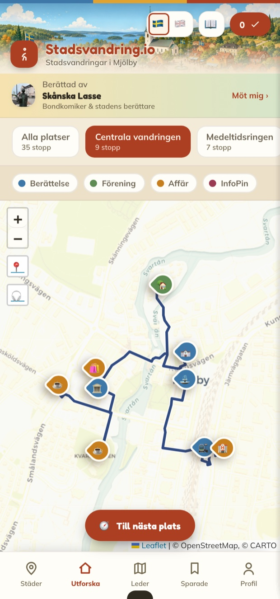

Upptäck din stad — en berättelse i taget.
Vi har precis lanserat Stadsvandring.io. Strosa runt bland sevärdheter, byggnader och historier på en levande karta. Lyssna på din lokala berättare, samla stämplar längs vägen och testa dig själv med quiz.
Fyra sorters stopp på samma karta

Vi vill få ut folk i sina egna städer — till fots.
Vi tror att varje gata, kvarn och torg bär på en berättelse. Lokalhistoria blir levande när den är promenadvänlig, gratis och rolig — när den möter dig precis där den faktiskt hände.
Vi bygger ett verktyg enkelt nog att alla kan bidra, och skalbart nog att rymma både en stor stad och en liten by.
I samarbete med hembygdsgårdar i hela Sverige
Runtom i landet finns hembygdsgårdar och eldsjälar som vårdar traktens minne. Vi samarbetar med dem för att lyfta fram det lokala — och göra det levande precis där det hände. Målet är att bevara det som annars riskerar att glömmas bort, och låta nya generationer upptäcka det till fots.
Historier
Om platserna, husen och människorna som format din hembygd.
Sägner
Det muntliga arvet — myter och berättelser som gått i arv i generationer.
Händelser
Det som hänt på orten genom åren — bevarat och berättat på riktigt.
Allt du behöver för en bra vandring
En karta, fyra sorters berättelser
Allt ligger på samma karta — du ser direkt vad som finns runt hörnet och kan välja din egen väg.
- Berättelser om platser, hus och personer
- Föreningar och hembygdsgårdar
- Caféer, butiker och hantverk
- Toaletter, parkering och laddning
En lokal röst som guidar dig
Varje stad får sin egen berättare. I Mjölby är det Skånska Lasse — dragspel, blommig väst och fyndig folklig humor.
- Spelas upp automatiskt via GPS
- Äkta dialekt och varm humor
- Historien kommer till liv där den hände
- Lyssna medan du går — händerna fria
Samla stämplar, lär dig något nytt
Varje besökt plats ger en digital stämpel. Testa dig själv med små quiz och se hur väl du känner din stad.
- En stämpel för varje plats du besöker
- Korta quiz som gör lärandet roligt
- Följ din egen samling över tid
- Perfekt för familjepromenaden
Färdiga turer, steg för steg
Följ tematiska vandringar som leder dig längs gatorna — från stopp till stopp, i din egen takt.
- Tematiska rutter genom staden
- Tydlig väg mellan varje stopp
- Funkar offline när du väl laddat den
- Börja och pausa när det passar dig
Fyra färger, fyra sorters stopp
Du ser direkt vad som finns runt hörnet — en historia, en förening, ett café eller praktisk hjälp på vägen.
En ny ort? Det är bara att lägga till.
Allt bygger på en delad kunskapsbas. Ingen app att ladda ner — det funkar direkt i webbläsaren, på mobil och dator. Både den stora staden och den lilla byn får plats.
Tre vägar att vara med
Vare sig du vill upptäcka, dela din kunskap eller sätta din verksamhet på kartan.
Invånare & nyfikna
Utforska din stad, samla stämplar och föreslå platser du tycker borde finnas med.
Öppna kartan →Hembygd & föreningar
Lägg in era bilder, berättelser och platser. Den varma vägen in för nya besökare.
Så bidrar ni →Företag & butiker
Bli partner och få en egen plats på kartan, där besökare redan rör sig till fots.
Bli partner →”Plötsligt såg jag min hemstad med nya ögon. Vi gick en söndagspromenad och stannade vid varenda kvarn.”
Snöret är knutet. Skorna på?
Öppna kartan och låt staden berätta — eller sätt din egen ort på kartan.